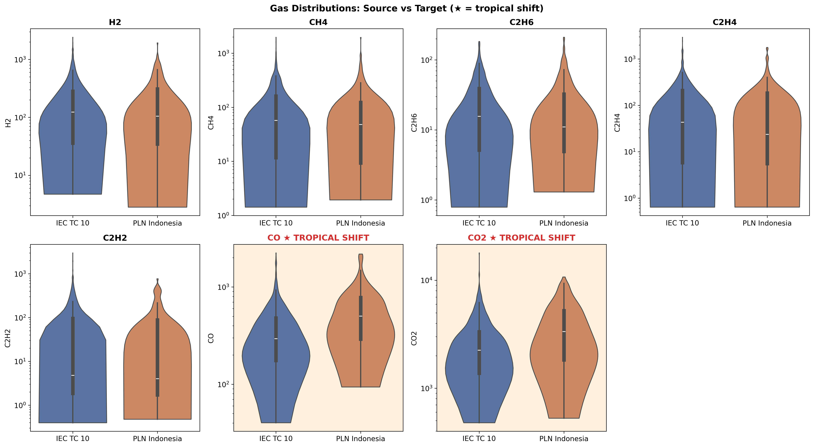
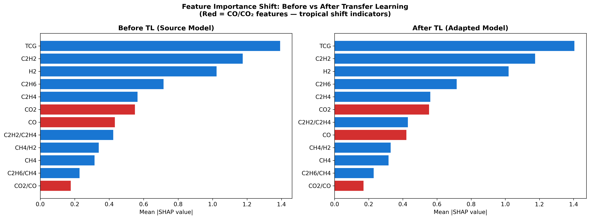
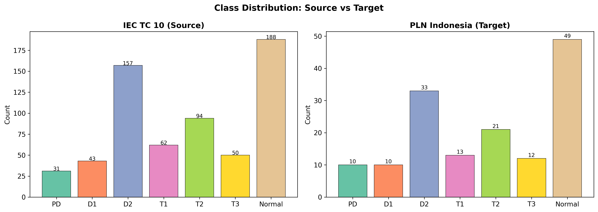
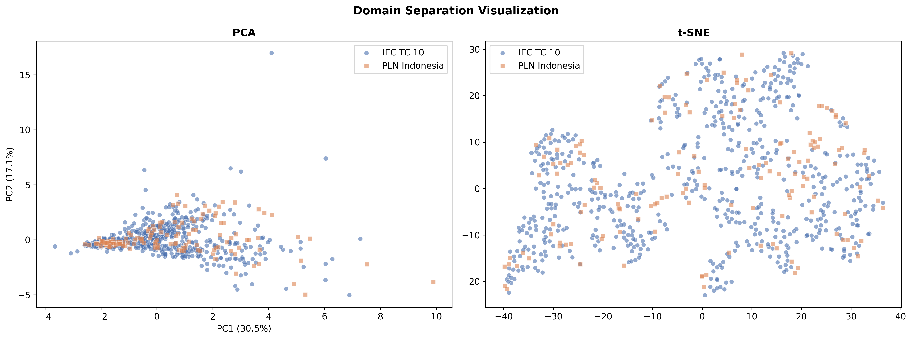
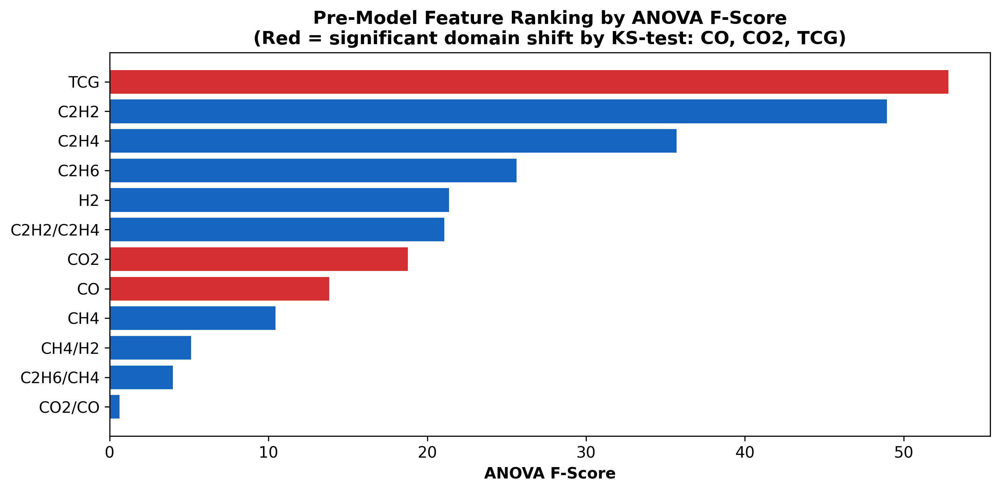
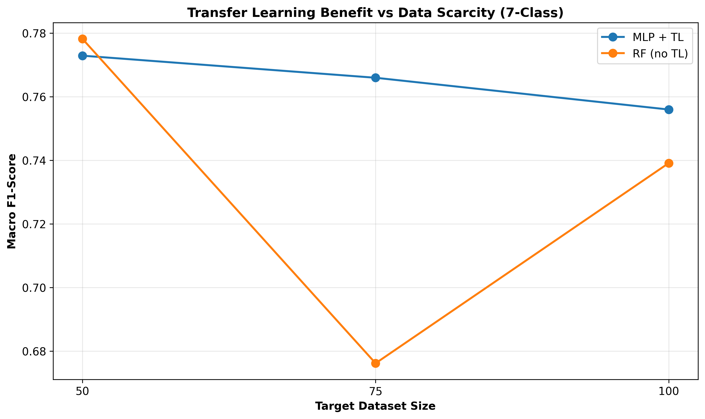
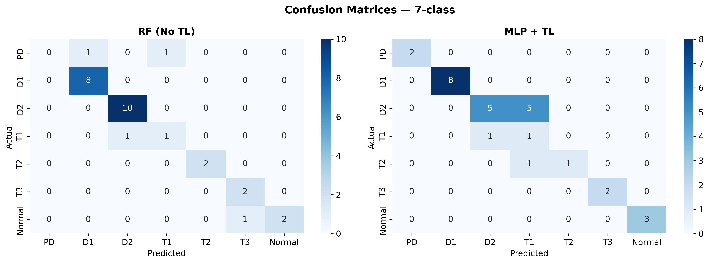
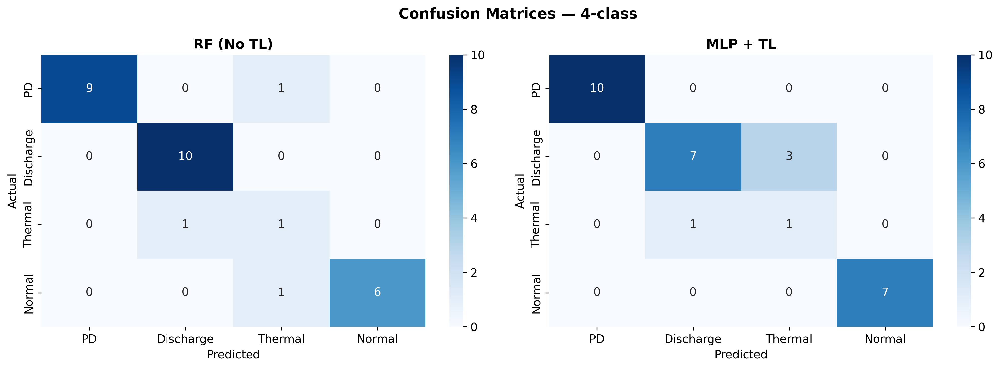

1
Transformers are critical, costly assets
A single grid transformer can cost millions and take a year to replace. A surprise failure cascades into outages, fines, and lost industrial production.
ICT-PEP 2026 · Research Report · Simulation Study
Power transformers fail loudly and expensively. A blood test for transformers — DGA — catches problems early. But the international rulebook was written for cooler climates. We show how transfer learning retrains a global model on a small Indonesian fleet, recovering accuracy where data is scarce.

01 — The problem
Utilities around the world diagnose transformer faults with a method calibrated on European and North-American fleets. In Indonesia, ambient heat and humidity change the chemistry — and the playbook starts to fail.
A single grid transformer can cost millions and take a year to replace. A surprise failure cascades into outages, fines, and lost industrial production.
Dissolved Gas Analysis reads seven gases in the cooling oil. Different gas signatures point to different faults — overheating, partial discharge, arcing — long before anything sparks.
Higher ambient temperatures accelerate cellulose degradation, lifting baseline CO and CO₂ above IEC 60599 typical values. Classifiers trained on global data misread these as faults — or miss real ones.
02 — The tropical signal
A Kolmogorov–Smirnov test compares two distributions and reports how different they are. Across twelve input features, only CO and CO₂ differ significantly between the IEC TC 10 source and our PLN tropical target — confirming the hypothesis with statistical rigor.
Higher bar = larger distributional shift. Bars colored orange are statistically significant (p < 0.05).
Interactive · hover any bar for p-value and significance. Source: ks_test_domain_shift.csv.
03 — Our approach
Instead of training from scratch on the few hundred Indonesian samples a utility actually has, we start from a model that already understands transformer faults — then we teach it the tropics.
A compact multilayer perceptron is trained on the IEC TC 10 benchmark — 625 globally sourced samples across seven fault classes — with SMOTE-ENN to balance rare faults.
The pretrained weights are adapted to a small PLN Indonesia target set with three strategies — freeze-head, progressive unfreeze, and full fine-tune. The last one wins.
SHAP values are recomputed before and after adaptation. CO and CO₂ climb into the top-5 features post-fine-tune, confirming the model actually learned the tropical signal.
04 — Headline results
We compared fourteen methods — classical baselines (Random Forest, XGBoost, SVM, KNN) and neural variants with and without transfer — across two fault-labelling schemes. Switch between the seven-class and four-class views below.
Mean ± standard deviation across cross-validation folds. Hover for full metrics.
Random Forest leads on the full target set; the transfer-learned MLP catches it when target data drops. See next section.
05 — The scarcity sweet spot
Real utilities rarely have hundreds of labelled samples when a monitoring programme begins. At n = 75 — the practically interesting regime — the transfer-learned MLP beats a target-only Random Forest by 9.0 percentage points on macro F1.
Two methods, four target sizes. The gap closes as data accumulates.
Interactive · hover each point for exact F1. Below ~100 samples, transfer learning is the safer choice.
06 — What the model learns
An ANOVA test ranks features by how much they help separate fault classes. Total combustible gas and acetylene dominate — the same hydrocarbons engineers already trust. CO and CO₂ rank lower for fault separation, even though they're the only features whose distribution shifts. The model has to do both jobs at once.
Higher = more useful for fault discrimination. All twelve features pass the p < 0.05 bar except CO₂/CO.
Source: anova_feature_ranking.csv.

07 — Visual evidence
For engineers and reviewers — every figure from the paper, click to enlarge.






08 — Honest limitations
The 148 PLN samples are simulated from a tropical shift model — they are not real field measurements with expert-confirmed labels.
CO×1.4–2.0 and CO₂×1.3–1.8 are plausible but not measured from the actual Indonesian fleet. Real values may differ.
Operational deployment requires confirmation on real PLN DGA records with engineer-confirmed faults.
The model classifies single measurements. Real diagnosis often uses gas-trend rates over time, which we do not yet incorporate.
09 — Take it further
ICT-PEP 2026 conference draft — methods, results, references.
Reproducible Jupyter notebook plus the figure / table generators.
All fourteen methods with full metrics.
Simplified fault scheme for cleaner boundaries.
Per-feature KS statistics and p-values.
F-scores per feature for fault discrimination.
@inproceedings{hakim2026tropicaldga,
title = {Tropical Domain Shift in Dissolved Gas Analysis:
Transfer Learning from the IEC TC 10 Benchmark
to PLN Indonesia for Transformer Fault Classification},
author = {Hakim, Fakhri and others},
booktitle = {Proc. ICT-PEP},
year = {2026}
}